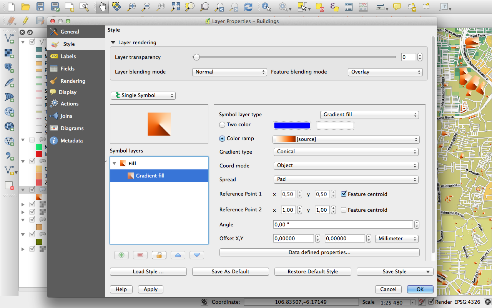

Jurnalul schimbărilor pentru QGIS 2.2¶
Jurnalul schimbărilor pentru următoarea versiune a QGIS, 2.2.0. În această versiune, accentul a fost pus foarte mult pe cizelare și performanță - s-au adăugat multe caracteristici noi, reglaje și îmbunătățiri, pentru a face interfața cu utilizatorul mai consistentă și pentru a-i conferi un aspect profesional (și, sperăm, mai ușor de utilizat). Compozitorul (folosit pentru crearea de hărți gata pentru imprimare), a înglobat foarte multă muncă, în scopul transformării sale într-o platformă viabilă, dedicată obținerii unor rezultate cartografice deosebite.
Ori de câte ori se adaugă noi caracteristici în aplicație, apare posibilitatea unor noi erori - dacă întâmpinați probleme cu această versiune, vă rugăm să le semnalați la QGIS Bug Tracker.
Dorim să le mulțumim dezvoltatorilor, testerilor, autorilor documentațiilor și tuturor acelor persoane care, în mod voluntar, au consumat timp și efort (sau celor care au finanțat diverse persoane în acest scop).
From the QGIS community we hope you enjoy this release! If you wish to donate time, money or otherwise get involved in making QGIS more awesome, please wander along to qgis.org and lend a hand!
În fine, am dori să mulțumim sponsorilor noștri oficiali pentru sprijinul financiar de neprețuit, pe care l-au oferit acestui proiect:
- Sponsor de AUR: Asia Air Survey, Japonia
- Sponsor de ARGINT: G.A.I.A. mbH, Germania
- Sponsor de ARGINT: State of Vorarlberg, Austria
- Sponsor de BRONZ: www.molitec.it, Italia
- Sponsor de BRONZ: www.argusoft.de, Germania
A current list of donors who have made financial contributions large and small to the project can be seen on our donors list.
If you would like to make a donation or sponsor our project, please visit our sponsorship page for details. QGIS is Free software and you are under no obligation to do so. Sponsoring QGIS helps us to fund our six monthly developer meetings, maintain project infrastructure and fund bug fixing efforts.
- Opțiunile Aplicației și ale Proiectului
- Furnizorii de date
- Digitizarea
- Generalități
- Compozitorul de Hărți
- Caracteristică: Îmbunătățiri aduse bordurii de tip Zebra
- Caracteristică: Suport pentru rotirea elementului
- Caracteristică: Îmbunătățiri aduse scalei și riglelor din compozitor
- Caracteristică: Generarea fișierelor World
- Caracteristică: Lucrul cu mai multe elemente
- Caracteristici: Îmbunătățiri aduse Atlasului
- Caracteristică: Selecție îmbunătățită a elementelor
- Caracteristică: Navigare mai bună printre compoziții
- Caracteristică: Stil îmbunătățit pentru pagini și forme
- QGIS Server
- Simbologia
- Caracteristică: Suport pentru umplerea cu gradient
- Caracteristică: Suport de etichetare pentru rasterele cu paletă
- Caracteristică: Gamele de culori pot fi inversate
- Caracteristică: Copiere și lipire în renderul bazat pe reguli
- Caracteristică: Generalizarea din zbor a entităților
- Caracteristică: Punctele de ancorare pot fi setate pentru straturile cu marcaje
- Caracteristică: Hărți tematice bazate pe expresii
- Caracteristică: Suport pentru expresii în diagramele simbol, pentru dimensiune și atribute
- Caracteristică: Regula Else în renderul bazat pe reguli
- Caracteristică: Suport pentru conturul interior al poligoanelor
- Interfața cu Utilizatorul
Opțiunile Aplicației și ale Proiectului¶
Caracteristică: Suport pentru măsurarea în Mile Nautice¶
Pentru navigatorii maritimi, este de acum disponibilă măsurarea distanțelor folosind milele maritime. Pentru a activa această opțiune, utilizați panoul de opțiuni Settings -> Options -> Map Tools.

Furnizorii de date¶
Caracteristică: Suport pentru relațiile one to many¶
Această versiune are abilitatea de a defini relațiile 1:n. Relațiile sunt definite în fereastra proprietăților proiectului. O dată ce există relații pentru un strat, un nou element de interfață cu utilizatorul, de tip formular (de exemplu, atunci când se identifică o entitate și se deschide formularul său) va lista entitățile aferente. Acest lucru oferă o modalitate puternică de a exprima, de exemplu, istoria inspecțiilor de-a lungul unei conducte sau a unui segment de drum. Puteți afla mai multe despre suportul pentru relații aici.

Caracteristică: Instrument de export DXF¶
Un nou instrument pentru exportul DXF a fost adăugat la meniul Project

Caracteristică: Lipire ca strat vectorial nou¶
Crearea unei sub-selecții, urmată de crearea unui nou strat din respectiva selecție, reprezintă o activitate comună într-un GIS. În QGIS puteți face deja salvarea ca selecție, pentru a salva un strat dintr-o selecție, iar de acum există și o funcționalitate care vă permite crearea unui nou fișier sau a unui strat de memorie, din ceea ce se află în clipboard. Pur și simplu selectați anumite entități, le copiați în clipboard și apoi faceți Edit-> Lipire entități ca și alegeți din submeniu fie Nou strat vectorial, fie Nou strat în memorie. Cea mai bună parte a acestei noi caracteristici este faptul că, dacă există unele entități de tip Well Known Text (WKT) în clipboard, provenite din altă aplicație, le puteți insera de acum ca un nou strat în QGIS.

Caracteristică: Legendă grafică WMS în cuprins și în compozitor¶
Înainte de QGIS 2.2 furnizorul de date WMS nu a fost capabil să afișeze o legendă în cuprinsul listei straturilor. În mod similar, nici o legendă nu s-a putea afișa în compozitor. QGIS 2.2 se adresează ambelor probleme.
Dacă faceți clic pe legenda stratului se va deschide un cadru cu o legendă, la rezoluție maximă. Legenda va afișa informații contextuale bazate pe scara curentă. Legenda WMS va fi afișată numai dacă serverul WMS are capabilități GetLegendGraphic. Rezoluția legendei poate fi modificată cu ajutorul opțiunilor Canvas & Legend.

Digitizarea¶
Caracteristică: Instrument de umplere a unui inel¶
Acest nou instrument este folosit pentru a reduce găurile din poligoane, umplându-le, în mod automat, cu noi entități. Dacă țineți apăsată tasta Ctrl la finalizarea entității, atributele vor fi luate din entitatea părinte.

Generalități¶
Caracteristică: Salvare expresii recente¶
De acum, constructorul de expresii memorează ultimele 20 de expresii folosite.

Caracteristică: Lipire WKT din clipboard¶
QGIS poate lipi și crea o nouă caracteristică bazată pe WKT, care se găsește în clipboard. Pur și simplu copiați și inserați unele WKT-uri într-un strat editabil. Puteți crea, de asemenea, un nou strat selectând Edit -> Paste As -> New Memory Layer
Compozitorul de Hărți¶
Caracteristică: Îmbunătățiri aduse bordurii de tip Zebra¶
De acum se pot seta culorile bordurii de tip Zebra pentru harta din compozitor.

Caracteristică: Suport pentru rotirea elementului¶
De acum, fiecare tip de element din compozitor poate fi rotit, inclusiv barele scării, tabelele și legendele. De exemplu, puteți roti o etichetă din compoziție, astfel încât să se încadreze mai bine în pagină (așa cum este ilustrat). Redimensionarea elementelor rotite a fost, de asemenea, îmbunătățită.

Caracteristică: Îmbunătățiri aduse scalei și riglelor din compozitor¶
Aspectul riglelor a fost îmbunătățit prin ajustarea logicii scării, prin adăugarea de diviziuni mai mici, și prin rotirea textului pentru riglele verticale. Există, de asemenea, o nouă posibilitate de a ascunde/arăta riglele. Acum puteți mări rapid la 100% scara paginii, folosind instrumentul Zoom to 100% din bara de instrumente. Fereastra compozitorului permite de acum comutarea rapidă a scării paginii, printr-o nouă casetă din bara de stare. În plus, un indicator nou a fost adăugat pentru afișa poziția precisă a pixelului din vârful cursorului. Butoanele Close și Help au fost eliminate din partea de jos a ferestrei compozitorului, pentru a oferi un maximum de spațiu de lucru pe ecran.

Caracteristică: Generarea fișierelor World¶
În compozitor puteți crea acum hărți georefențiate! Pur și simplu asigurați-vă că alegeți elementul de hartă corect în fila Composition și apoi exportați harta sub formă de fișier PNG. Va apărea și un fișier world însoțitor, permițându-vă să încărcați compoziția exportată în QGIS, sub formă de strat raster.

Caracteristică: Lucrul cu mai multe elemente¶
A fost adăugat suport pentru mutarea și redimensionarea mai multor elemente simultan. Puteți ține apăsată tasta Shift în timpul redimensionării, pentru a păstra raportul unui element, sau să țineți apăsată tasta Ctrl pentru a redimensiona elementul începând cu centrul acestuia. Aceste taste se aplică și elementelor în mișcare, așa că reținerea tastei Shift în timp ce se deplasează un element, are ca efect deplasarea lui doar pe orizontală sau pe verticală, în timp ce reținerea tastei Ctrl dezactivează temporar snapping-ul. Puteți reține, de asemenea, tasta Shift în același timp cu apăsarea tastelor cu săgeți, pentru a modifica cantitatea de elemente selectate.
Caracteristici: Îmbunătățiri aduse Atlasului¶
De acum, există posibilitatea de a examina paginile individuale ale atlasului cu hărți care va fi generat în compozitor. Atât timp cât va aflați în modul de previzualizare din atlas, aveți posibilitatea de obținere a paginii curente, fără a elabora întregul atlas. Puteți ajusta, de asemenea, limitele hărții sau scara pentru fiecare entitate, în timp ce examinați pagina atlasului. Setările hărții au fost mutate din panoul atlasului în panoul de proprietăți a hărții, astfel încât de acum veți putea controla mai mult de o hartă prin generarea atlasului. Există o nouă opțiune pentru a centra automat portul de vizualizare al unei hărți, care este foarte eficace atunci când creați hărți bazate pe atlas. Mai multe informații contextuale sunt acum disponibile, astfel încât să puteți ajusta simbologia în funcție de apartenența entității la atlasul curent. Parcurgeți acest articol pentru mai multe informații.
Caracteristică: Selecție îmbunătățită a elementelor¶
Acum puteți selecta mai mult de un element, făcând clic și trasând un dreptunghi de selecție, apelând simultan la comenzi rapide pentru cumularea selecțiilor (apăsâd Shift în timp ce glisați), pentru scăderea din selecție (utilizând tasta Ctrl), sau trecând la modul de selecție „în interior” (ținând apăsată tasta Alt pe timpul glisării). Țineți apăsată tasta Shift și efectuați clic pe un element deja selectat, pentru a-l elimina din selecție. Există, de asemenea, comenzi rapide și elemente de meniu pentru selectarea tuturor elementelor, pentru anularea unei selecții sau pentru inversarea acesteia. Este, de asemenea, posibilă selectarea elementelor care sunt ascunse sub alte elemente, ținând apăsată tasta Ctrl și făcând clic pe un element, sau utilizând „Selectați următorul element de deasupra/dedesubt” din noul meniu Edit al compozitorului.
Caracteristică: Stil îmbunătățit pentru pagini și forme¶
De acum, puteți controla stilul pentru fundalul compoziției, folosind întreaga gamă de opțiuni a simbologiei QGIS. Este posibilă exportarea compozițiilor cu un fundal transparent (sau semi-transparent). Obiectele cu forme (dreptunghiuri, triunghiuri și elipse), pot fi, de asemenea, stilizate, folosind aceleași opțiuni ca straturile de hartă poligon. Puteți stiliza chiar fundalul paginii sau formele cu ajutorul setărilor definite de date în funcție de entitatea curentă din atlas! Există, de asemenea, o nouă opțiune pentru rotunjirea colțurilor forme dreptunghiulare.
QGIS Server¶
Caracteristică: S-a adăugat suport WCS în QGIS Server¶
QGIS-Server suportă deja următoarele standarde: Web Map Service (WMS versiunile 1.3.0 și 1.1.1), Web Feature Service (WFS versiunea 1.0.0) și Web Feature Service with Transaction (WFS-T). Începând cu această versiune de QGIS, puteți servi acum straturi raster utilizând standardul Web Coverage Service (WCS version 1.0.0)).

Simbologia¶
Caracteristică: Suport pentru umplerea cu gradient¶
Noua caracteristică de umplere cu gradient vă permite crearea unei cartografii mult mai bune decât înainte. Caracteristica are numeroase opțiuni care oferă o mare flexibilitate referitoare la modul în care puteți aplica degradeuri entităților dumneavoastră. Printre opțiuni sunt incluse:
- Umplere pe baza a două culori sau a unui degradeu
- Origine bazată pe suprafața hărții sau pe obiect, pentru gradienții dvs.
- Gradienți cu originea în centrul geometric al unui element
- Tipuri de gradienți radiali, conici și liniari
- Opțiuni de definire prin date (folosind o expresie sau o coloană a tabelului) pentru toate proprietățile gradientului.
Citiți mai multe despre modul de umplere cu gradienți aici.

Caracteristică: Suport de etichetare pentru rasterele cu paletă¶
Rasterelor care folosesc o paletă fixă de culori (cum ar fi, de exemplu, harta suprafețelor de teren) li se pot aloca de acum etichete de categorie, care vor fi prezentate atât în legenda hărții cât și în legenda compozitorului.

Caracteristică: Gamele de culori pot fi inversate¶
A fost adăugată o nouă opțiune, care folosește game de culori, în ferestrele de dialog ale simbologiei, permițându-vă inversarea gamei la momentul creării acesteia.

Caracteristică: Copiere și lipire în renderul bazat pe reguli¶
În renderul bazat pe reguli, aveți acum posibilitatea să faceți clic dreapta pe o regulă, să o copiați și apoi să o inserați ca regulă nouă.

Caracteristică: Generalizarea din zbor a entităților¶
QGIS 2.2 introduce suport pentru generalizarea din zbor a entităților. Acest lucru poate îmbunătăți timpul de randare în momentul desenării la scări mici a unei multitudini de entități complexe. Această caracteristică poate fi activată sau dezactivată în setările stratului. Există, de asemenea, un nou cadru global care permite, în mod implicit, generalizarea pentru straturile nou adăugate. Notă: generalizarea entităților poate introduce artefacte în rezultatul randării, în unele cazuri. Acestea poate însemna prezentă unor așchii între poligoane și randarea inexactă atunci când se utilizează straturi simbol decalate.

Caracteristică: Punctele de ancorare pot fi setate pentru straturile cu marcaje¶
La definirea simbologiei cu straturi cu marcaje (de exemplu, un strat de punct simbolizat cu marcaje SVG), puteți specifica acum ce parte a imaginii ar trebui să corespundă «punctului de ancorare». De exemplu, puteți preciza că, în cazul unei imagini, colțul din stânga-jos ar trebui să coincidă cu poziția entității. Puteți folosi, de asemenea, proprietăți definite prin date, pentru a avea această proprietate setată la momentul randării, pe baza unui atribut din tabelul de date pentru acel strat (sau pe baza unei expresii arbitrare).

Caracteristică: Hărți tematice bazate pe expresii¶
Hărțile tematice, clasificate pe categorii și pe grade, pot fi create folosindu-se rezultatul unei expresii. În fereastra de proprietăți a straturilor vectoriale, selectorului de atribute i s-a adăugat un constructor de expresii. Astfel, de acum nu mai este necesară introducerea atributului de clasificare într-o nouă coloană din tabelul de atribute, dacă doriți ca el să fie un compozit al mai multor câmpuri, sau vreo anumită formulă.

Caracteristică: Suport pentru expresii în diagramele simbol, pentru dimensiune și atribute¶
Acum puteți utiliza o expresie pentru a defini dimensiunea și atributele, atunci când utilizați diagramele de capabilități din QGIS. Pentru mai multe informații parcurgeți Pull 1039

Caracteristică: Regula Else în renderul bazat pe reguli¶
Renderul bazat pe reguli suportă de acum regula Else, care va fi rula în cazul în care nici una dintre celelalte reguli de la același nivel nu se potrivește. Regulile Else pot fi imbricate la fel ca orice alte reguli.
Un exemplu poate fi următorul:
type = 'water' (style grey)ELSE (style red)
Caracteristică: Suport pentru conturul interior al poligoanelor¶
A fost adăugat suport pentru contururile poligonale interioare, care pot fi menținute doar în interiorul poligonului (astfel încât să nu pătrundă într-un poligon învecinat).
Mai multe informații despre această caracteristică pot fi găsite în a doua parte a acestui articol.

Interfața cu Utilizatorul¶
Caracteristică: Ferestre de proprietăți îmbunătățite¶
Ferestrelor cu proprietăți li s-a actualizat meniul principal, acesta fiind afișate mai clar, cu o culoare inversă în bara laterală. Acest lucru este pur cosmetic, dar ar trebui să facă mai ușoară cunoașterea filei active în mod curent.

Caracteristică: Îmbunătățiri ale ferestrei de expresii¶
S-au adus unele îmbunătățiri în fereastra expresiilor - utilizatorii avansați pot ascunde acum butoanele operatorilor. Există, de asemenea, o bară de separare între lista funcțiilor și zona de ajutor, și o alta între zona expresiilor și lista de funcții. A se vedea https://github.com/qgis/QGIS/pull/1073 pentru detalii.

Caracteristică: Noi combinații de taste¶
Am actualizat combinațiile de taste din QGIS, pentru a-l face mai eficient la îndeplinirea sarcinilor repetitive.
ctrl-d- Elimină din cuprins straturile selectate>- Selectează următorul nod, atunci când se folosește instrumentul nod<- Selectează nodul anterior, atunci când se folosește instrumentul nodDeletesauBackspace- șterge entitățile selectate (aceste acțiuni pot fi date înapoi), sau un nod, atunci când se utilizează instrumentul nod.F5actualizează suportul hărții (în locul combinației ctrl-r)
Parcurgeți Issue 9094 și Pull Request 1010 pentru mai multe detalii.